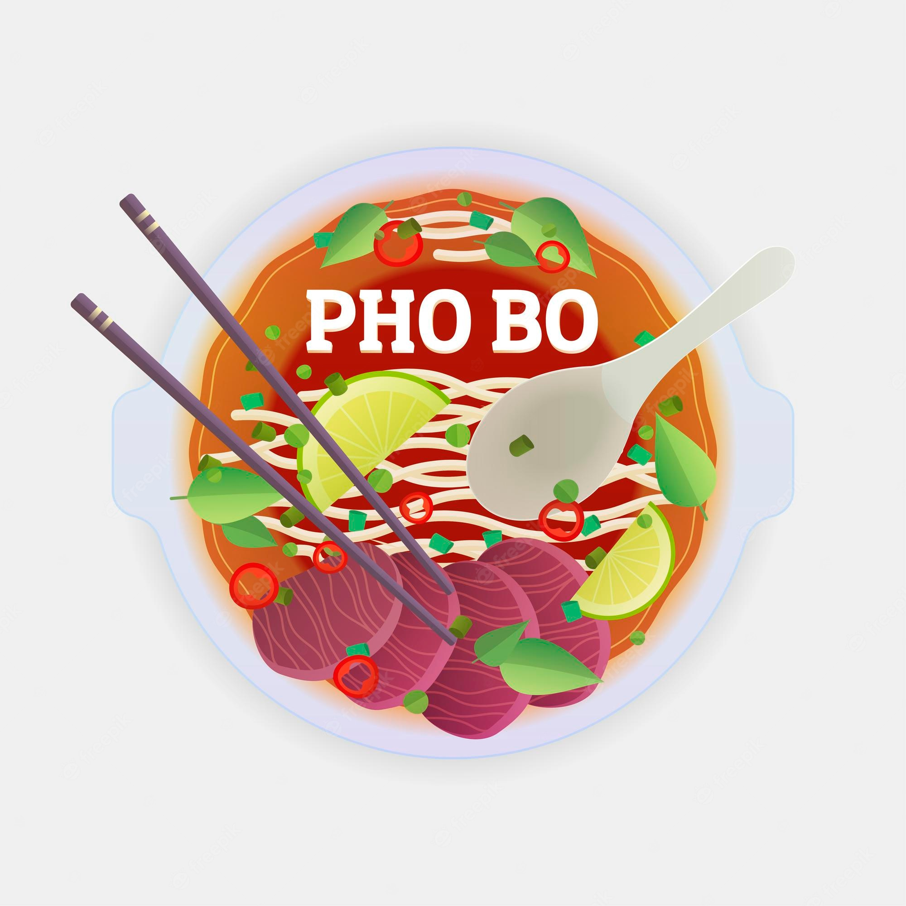

Authentic Pho
Description
Authentic, Vietnamese pho soup is all about the broth! Beef bones,
fish sauce, star anise, and ginger simmer for at least 6 hours,
creating a complex, aromatic broth that may not be quick,
but it's certainly delicious.
The flavorful broth is ladled over rice noodles and thinly sliced beef and topped with fresh garnishes.
Ingredients
- 4 pounds beef soup bones (shank and knee)
- 1 medium onion, unpeeled and cut in half
- 5 slices fresh ginger
- 1 tablespoon salt
- 2 pods star anise
- 2 ½ tablespoons fish sauce
- 4 quarts water
- 1 (8 ounce) package dried rice noodles
- 1 ½ pounds beef top sirloin, thinly sliced
- ½ cup chopped cilantro
- 1 tablespoon chopped green onion
- 1 ½ cups bean sprouts
- 1 bunch Thai basil
- 1 medium lime, cut into 4 wedges
- ¼ cup hoisin sauce (Optional)
- ¼ cup chile-garlic sauce (such as Sriracha®) (Optional)
Steps
- Preheat the oven to 425 degrees F (220 degrees C).
- Place beef bones on a baking sheet and roast in the preheated oven until browned, about 1 hour.
- Place onion halves on a second baking sheet and roast on another rack until blackened and soft, about 45 minutes.
- Transfer beef bones and onion halves to a large stockpot.
Add ginger, salt, star anise, fish sauce, and 4 quarts water;
bring to a boil. Reduce heat to low and simmer
for 6 to 10 hours.
Strain the broth into a saucepan and set aside.
- Place rice noodles in a large bowl filled with room temperature water. Let soak for 1 hour. Drain.
- When noodles have soaked for 1 hour, heat up the reserved broth by bringing it to a simmer.
- Bring a large pot of water to a boil. Cook the noodles in the boiling water for 1 minute. Drain.
- Divide noodles among 4 serving bowls; top with sirloin, cilantro, and green onion.
Ladle hot broth over the top.
Stir and let sit until beef is partially cooked and no longer pink, 1 to 2 minutes.
- Serve with bean sprouts, Thai basil, lime wedges, hoisin sauce, and chile-garlic sauce on the side.